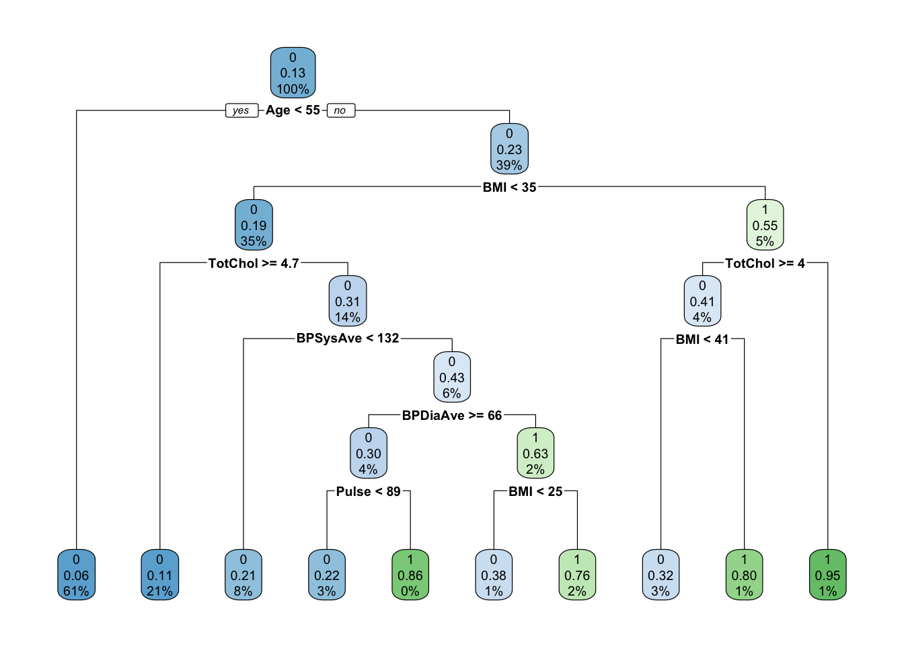

data(framingham)
data("NHANES")
framingham <- framingham %>%
select(DIABETES, SEX, AGE, BMI, SYSBP, DIABP, CURSMOKE, educ, HEARTRTE, TOTCHOL) %>%
mutate(TOTCHOL = TOTCHOL / 38.67)
framingham <- na.omit(framingham)
NHANES <- unique(NHANES)
NHANES <- NHANES %>%
select(Diabetes, Gender, Age, BMI, BPSysAve, BPDiaAve, SmokeNow, Education, Pulse, TotChol)
NHANES <- na.omit(NHANES)
names(framingham) <- names(NHANES)Group presentation ML_EPI
Load packages
Objective
To evaluate risk scores performance between different models on an external population .
Data set
NHANES
Framingham study
Prepare data
Descriptive
NHANES2 <- NHANES %>%
mutate(data_source = "NHANES")
framingham2 <- framingham %>%
mutate(data_source = "Framingham")
data_descriptive <- rbind(NHANES2, framingham2)
data_descriptive %>%
tbl_summary(by = "data_source")| Characteristic | Framingham, N = 10,8951 | NHANES, N = 2,2021 |
|---|---|---|
| Diabetes | ||
| 0 | 10,408 (96%) | 1,924 (87%) |
| 1 | 487 (4.5%) | 278 (13%) |
| Gender | ||
| 0 | 4,764 (44%) | 1,257 (57%) |
| 1 | 6,131 (56%) | 945 (43%) |
| Age | 54 (47, 62) | 49 (34, 62) |
| BMI | 25.4 (23.1, 28.0) | 27.5 (24.0, 32.0) |
| BPSysAve | 132 (120, 149) | 120 (111, 131) |
| BPDiaAve | 82 (75, 90) | 71 (63, 78) |
| SmokeNow | ||
| 0 | 6,169 (57%) | 1,199 (54%) |
| 1 | 4,726 (43%) | 1,003 (46%) |
| Education | ||
| 1 | 4,503 (41%) | 165 (7.5%) |
| 2 | 3,277 (30%) | 372 (17%) |
| 3 | 1,815 (17%) | 1,219 (55%) |
| 4 | 1,300 (12%) | 446 (20%) |
| Pulse | 75 (69, 85) | 72 (64, 80) |
| TotChol | 6.15 (5.43, 6.93) | 4.94 (4.27, 5.69) |
| 1 n (%); Median (IQR) | ||
Set up: Partition data into training/testing
set.seed(123)
training.data <- createDataPartition(NHANES$Diabetes, p = 0.7, list = F)
train.data <- NHANES[training.data, ]
test.data <- NHANES[-training.data, ]Model development on NHANES
Reference model logistic regression
- Upsampling because of low prevalence of diabetes
set.seed(123)
control.obj <- trainControl(method = "cv", number = 10, sampling = "up")
logit.drisk <- train(
Diabetes ~ .,
data = train.data,
method = "glm",
family = "binomial",
preProcess = c("center", "scale"),
trControl = control.obj
)
logit.drisk$results parameter Accuracy Kappa AccuracySD KappaSD
1 none 0.7080915 0.2417274 0.05537699 0.08056645confusionMatrix(logit.drisk)Cross-Validated (10 fold) Confusion Matrix
(entries are percentual average cell counts across resamples)
Reference
Prediction 0 1
0 61.9 3.8
1 25.4 8.9
Accuracy (average) : 0.7082coef(logit.drisk$finalModel)(Intercept) Gender1 Age BMI BPSysAve BPDiaAve
-0.01827222 -0.21447696 0.92916018 0.60493394 0.14585904 -0.09918068
SmokeNow1 Education2 Education3 Education4 Pulse TotChol
-0.04482780 -0.12253241 -0.11363089 -0.14039427 0.26380162 -0.11689952 Random forrest development
Prevalence of diabetes of too low in Framingham dataset gives problems in random forrest
feat.count <- c((ncol(train.data) - 1), (ncol(train.data) - 1) / 2, sqrt(ncol(train.data) - 1))
grid.rf <- expand.grid(mtry = feat.count)
control.obj <- trainControl(method = "cv", number = 10, sampling = "up")
# control.obj <- trainControl("cv", number = 5)
tree.num <- seq(100, 500, by = 200)
results.trees <- list()
for (ntree in tree.num) {
set.seed(123)
rf.drisk <- train(
Diabetes ~ .,
data = train.data,
method = "rf",
trControl = control.obj,
metric = "Accuracy",
tuneGrid = grid.rf,
importance = TRUE,
ntree = ntree
)
index <- toString(ntree)
results.trees[[index]] <- rf.drisk$results
}
output.rf.drisk <- bind_rows(results.trees, .id = "ntrees")
best.tune <- output.rf.drisk[which.max(output.rf.drisk[, "Accuracy"]), ]
best.tune$mtry[1] 4.5results.trees$`100`
mtry Accuracy Kappa AccuracySD KappaSD
1 3.0 0.8761365 0.3054445 0.01444811 0.1093738
2 4.5 0.8787382 0.3213556 0.02111103 0.1432967
3 9.0 0.8748421 0.3481391 0.02050548 0.1243888
$`300`
mtry Accuracy Kappa AccuracySD KappaSD
1 3.0 0.8806947 0.3133038 0.01517151 0.1295326
2 4.5 0.8793918 0.3151886 0.01878820 0.1189301
3 9.0 0.8774353 0.3581931 0.01941690 0.1235756
$`500`
mtry Accuracy Kappa AccuracySD KappaSD
1 3.0 0.8793790 0.3062698 0.01368349 0.1190253
2 4.5 0.8813314 0.3341661 0.02043886 0.1256233
3 9.0 0.8767859 0.3578562 0.02094337 0.1366437Final Random forrest model
mtry.grid <- expand.grid(.mtry = best.tune$mtry)
set.seed(123)
rf.drisk.bt <- train(
Diabetes ~ .,
data = train.data,
method = "rf",
trControl = control.obj,
metric = "Accuracy",
tuneGrid = mtry.grid,
importance = TRUE,
ntree = as.numeric(best.tune$ntrees)
)
confusionMatrix(rf.drisk.bt)Cross-Validated (10 fold) Confusion Matrix
(entries are percentual average cell counts across resamples)
Reference
Prediction 0 1
0 84.1 8.6
1 3.2 4.0
Accuracy (average) : 0.8813varImp(rf.drisk.bt)rf variable importance
Importance
Age 100.000
BMI 90.378
TotChol 81.629
BPDiaAve 51.860
BPSysAve 49.831
Pulse 46.693
Education3 9.170
Education4 4.486
Education2 4.249
Gender1 4.022
SmokeNow1 0.000varImpPlot(rf.drisk.bt$finalModel)Ridge model
set.seed(123)
#Create grid to search lambda
lambda <- 10^seq(-3,3, length=1000)
control.obj<-trainControl(method="cv", number=10, sampling="up")
#Note replacing tuneLength with tuneGrid
ridge.model<-train(
Diabetes ~., data=train.data,
method="glmnet",
trControl=control.obj,
preProc=c("center", "scale"),
tuneGrid=expand.grid(alpha = 0, lambda=lambda)
)
ridge.model$bestTune alpha lambda
885 0 203.8493# Model coefficients
coef(ridge.model$finalModel, ridge.model$bestTune$lambda)12 x 1 sparse Matrix of class "dgCMatrix"
s1
(Intercept) -3.487873e-12
Gender1 -5.031802e-05
Age 3.319060e-04
BMI 2.048248e-04
BPSysAve 1.855667e-04
BPDiaAve -4.458128e-05
SmokeNow1 -1.467837e-04
Education2 -1.248270e-05
Education3 -1.200570e-06
Education4 -3.491805e-05
Pulse 3.000889e-05
TotChol -6.473725e-05# Make predictions in test set
ridge.pred <- ridge.model %>% predict(test.data)
# Model prediction performance
confusionMatrix(ridge.model)Cross-Validated (10 fold) Confusion Matrix
(entries are percentual average cell counts across resamples)
Reference
Prediction 0 1
0 67.4 6.1
1 19.9 6.5
Accuracy (average) : 0.7399Evaluate models on test set in NHANES
ROC curves
# Compute ROC curves
roc_logit <- roc(test.data$Diabetes, logit.pp, levels = rev(levels(test.data$Diabetes)))Setting direction: controls > casesroc_rf <- roc(test.data$Diabetes, rf.pp, levels = rev(levels(test.data$Diabetes)))Setting direction: controls > casesroc_ridge <- roc(test.data$Diabetes, ridge.pp, levels = rev(levels(test.data$Diabetes)))Setting direction: controls > cases# Plot ROC curves
plot(roc_logit, col = "blue", main = "ROC Curves for Logistic Regression and Random Forest")
lines(roc_rf, col = "red")
lines(roc_ridge, col = "green")
legend("bottomright", legend = c("Logistic Regression", "Random Forest", "Ridge"), col = c("blue", "red","green"), lwd = 2)Calibration plot
pred.prob <- data.frame(Class = test.data$Diabetes, logit = logit.pp, rf = rf.pp, ridge = ridge.pp)
calplot <- (calibration(Class ~ logit + rf + ridge, data = pred.prob, class = "1", cuts = 10))
xyplot(calplot, auto.key = list(columns = 2))Evaluate performance on external data from Framingham study
External performance on the Framingham study
ROC curves
# Compute ROC curves
roc_logit <- roc(evaluation_data$Diabetes, logit.pp, levels = rev(levels(evaluation_data$Diabetes)))Setting direction: controls > casesroc_rf <- roc(evaluation_data$Diabetes, rf.pp, levels = rev(levels(evaluation_data$Diabetes)))Setting direction: controls > casesroc_ridge <- roc(evaluation_data$Diabetes, ridge.pp, levels = rev(levels(evaluation_data$Diabetes)))Setting direction: controls > cases# Plot ROC curves
plot(roc_logit, col = "blue", main = "ROC Curves for Logistic Regression and Random Forest")
lines(roc_rf, col = "red")
lines(roc_ridge, col = "green")
legend("bottomright", legend = c("Logistic Regression", "Random Forest", "Ridge"), col = c("blue", "red","green"), lwd = 2)Calibration plot
pred.prob <- data.frame(Class = evaluation_data$Diabetes, logit = logit.pp, rf = rf.pp, ridge = ridge.pp)
calplot <- (calibration(Class ~ logit + rf + ridge, data = pred.prob, class = "1", cuts = 10))
xyplot(calplot, auto.key = list(columns = 2))Variable importance
varImp(rf.drisk.bt)rf variable importance
Importance
Age 100.000
BMI 90.378
TotChol 81.629
BPDiaAve 51.860
BPSysAve 49.831
Pulse 46.693
Education3 9.170
Education4 4.486
Education2 4.249
Gender1 4.022
SmokeNow1 0.000varImpPlot(rf.drisk.bt$finalModel)
Visualise the pathway of risk decision
set.seed(123)
train.control <- trainControl(method = "cv", number = 10)
grid.singletree <- expand.grid(cp = seq(0.0005, 0.02, by = 0.001))
tree.diabetes <- train(
Diabetes ~ .,
data = train.data,
method = "rpart",
trControl = train.control,
tuneGrid = grid.singletree
)
rpart.plot(tree.diabetes$finalModel)
Ethical considerations
If by using a few easily obtainable features you can predict a persons risk of developing diabetes, if that model was adopted by an insurance company, it might impact ones chance of getting an insurance and/or the price of the insurance